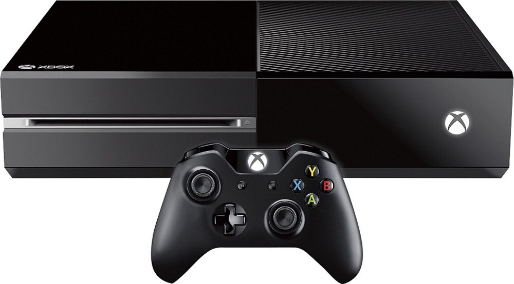
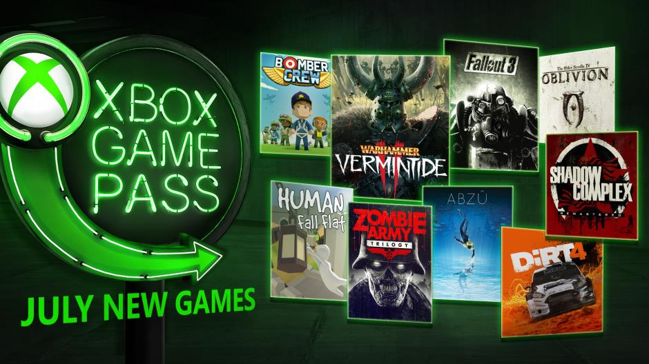
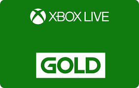

Xbox One
Jedna z dwoch konsol do wyboru. Wielu ludzi ma problem, aby wybrac konsole. Tez taka mialem, wiec przechytrzylem system i kupilem obie. Jedyna zmienna, miedzy konsolami sa pady. Pad od xboxa jest ciezszy, ale lepiej utrzymuje sie w dloni. Aby moc grac przez internet trzeba wykupywac roczny abonament, nie wielka jest to cena, za otrzymywanie co miesiac 2 gier. Jesli ktos zastanawia sie jaka to nazwa, jest to Xbox Live. Duza zaleta xboxa jest Xbox Pass oraz Ea access, czyli wydajesz dodatkowe pieniadze na abonament i grasz w ich gry, ktore udostepniaja do konca subskrybcji. Ps4 ma VR, xbox ma kinecta. Przy duzym pokoju, mozna sie niezle zabawic, ze znajomymi. W tym wypadku nie bedziemy ruszac padem, ale rekoma. Kinect odczytuje nasze ruchy i przedstawia na xboxie. Jest duzo gier dla takiej zabawy. I na koniec warto wspomniec o wstecznej kompatybilnosc, pozwala ona zagrac w stare gry, ktore wyszly juz na starszej generacji xboxa. Jesli mialbym wybierac miedzy konsolami wybralbym PC, konsole kupilbym uzywana i zostawil dla fify. Moze wyjasnie. Miedzy PC i xboxem 360 nie bylo takiej przepasci co jest teraz, miedzy Konsola, a Blaszakiem. Na tyle lat co byla 360, xbox one jest za slaby. Mam dobry telewizor 4k, i musze wydac prawie 2tys, aby sie nacieszyc nim. Doliczajac koniecznosc kupienia gier, ktore sa 2x drozsze. Kupno kompa do reszty gier, wydaje mi sie lepszym rozwiazaniem. Wrocmy do tematu. Scena na xboxie, caly czas sie rozwija. Co raz wiecej osob, mozna znalezc do wspolnej gry. Wyroznia sie takie sceny jak VFL, VPL oraz FVPA. Niestety xbox na kazdym kroku odstaje PS4, ma mniejsza spolecznosc, EA mniej na nia zwraca uwage i sami zalozyciele scen. Jest to wyscig rozwoju, ktory wygrywa xbox, poniewaz zawsze bedac z tylu, ps4 pokazuje, gdzie ma isc. Na koniec moge tylko napisac, ze na xboxie wygodniej jest sie komunikowac, pad lepiej lezy na dloni, ludzie sa mlodsi, dlatego wiecej graja. Jesli ktos mysli, ze spolecznosc rozni sie miedzy konsolami. To jest w bledzie, zawsze znajda sie przyjazni, jak i wrogo nastawieni ludzie. Grasz w Ultimate Team, wybierz PS4. Masz wieksze szanse na trafienie slabszych zawodnikow, wiecej zawodnikow na rynku, a przy byciu jednym z najlepszych latwiejsza szansa na zaistenie w sieci. Ja sie przyzwyczailem do xboxa, zawarlem tam pelno znajomosci i grajac na PS4 nie jestem tak szczesliwy, jak bylem na xboxie.